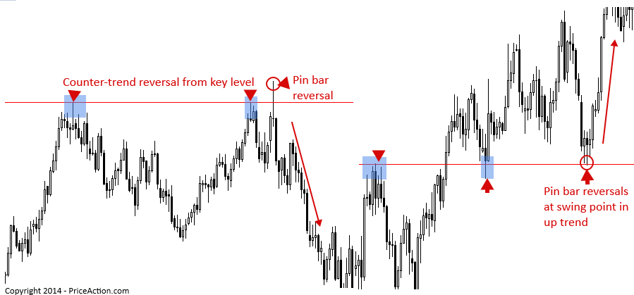
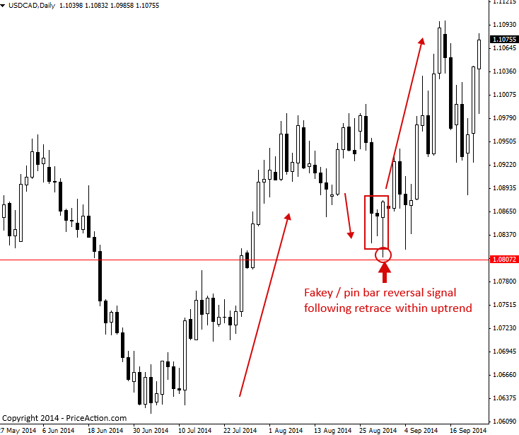
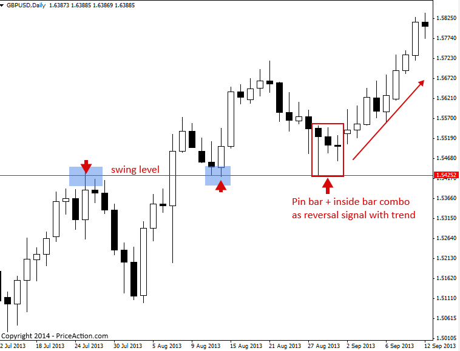
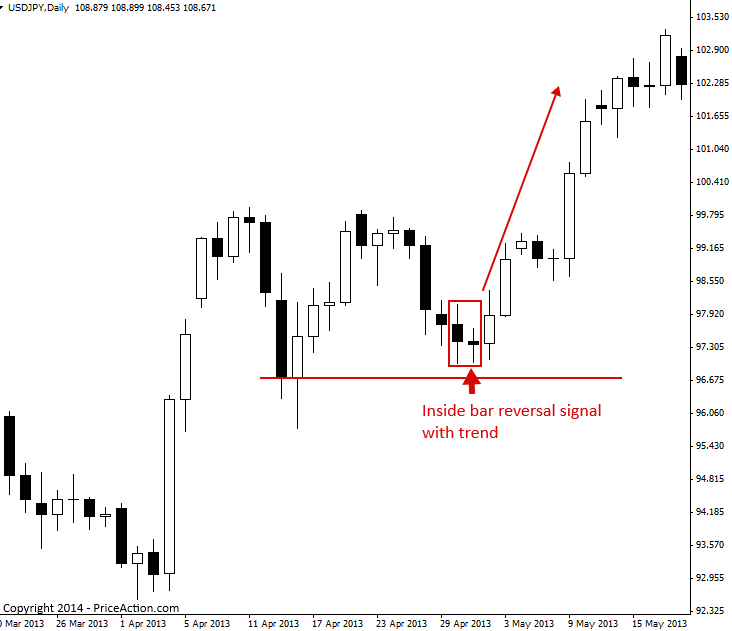
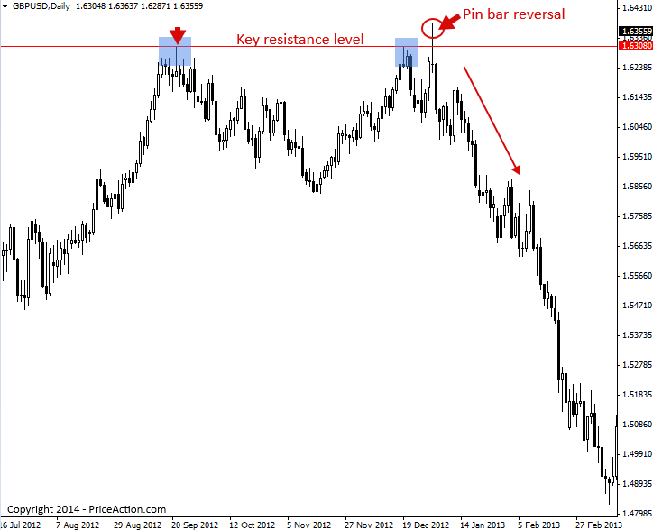
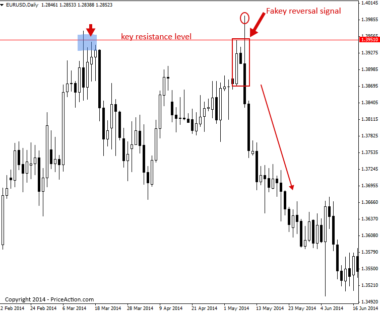

Price Action Reversal Strategies
가격 움직임 거래 전략을 활용하는 가장 강력한 방법 중 하나는 시장에서 반전 신호로 활용하는 것입니다. 가격 움직임 신호는 종종 트레이더에게 가격 반전(방향 전환)이 임박했음을 알려주는 단서가 될 수 있습니다. 이러한 가격 움직임 반전 전략은 추세 시장, 박스권 시장, 심지어 역추세 시장으로의 정확한 진입을 가능하게 하며, 높은 위험 대비 수익률 잠재력을 제공합니다.
다음은 전반적인 시장 추세에 따른 역추세 핀바 반전 신호에 이어 핀바 반전(더블 핀)이 나타나는 예입니다.

위의 예에서 볼 수 있듯이, 가격 움직임 반전 신호를 왼쪽 예처럼 반대 추세 진입으로 사용할 수도 있고, 위 이미지의 오른쪽에 있는 핀 막대에서 볼 수 있듯이 추세와 함께 진입으로 사용할 수도 있습니다.
많은 트레이더들이 '반전 신호'가 단지 역추세일 뿐이라고 생각하는 실수를 합니다. 하지만 전혀 그렇지 않습니다. 추세는 밀물과 썰물을 반복하며, 다시 저점으로 되돌아오기도 합니다. 이러한 상황에서 우리는 이러한 저점에서 형성되는 가격 움직임 반전 신호를 감지하여 주요/전체 일간/주간 차트 추세와 일치하게 거래될 수 있습니다.
가격 움직임 반전 신호를 추세에 맞춰 거래하는 방법
시장에 기존 추세가 뚜렷할 경우, 해당 추세 내 수준으로 후퇴한 후 가격 변동 반전 신호를 찾아볼 수 있습니다.
트레이더들은 종종 추세 내 정상적인 되돌림을 추세 변화로 오인합니다. 추세는 상당 기간 동안 지속될 수 있으며, 추세가 끝나기 전에 '가치선으로' 또는 지지선/저항선으로 여러 번 되돌림을 경험할 수 있다는 점을 기억하는 것이 좋습니다. 일반적인 경험 법칙은 가격 움직임이 추세의 끝을 명확히 보여줄 때까지 일간 차트 추세를 따라 매매하는 것입니다. 고점과 저점을 잡으려고 하지 마세요. 특히 트레이딩 경험이 부족하거나 비교적 초보인 경우, 이는 일반적으로 손해를 보는 전략입니다. 시장이 추세를 보이다가 되돌림을 시작하면, 가능성이 높은 지점에서 추세에 다시 합류할 수 있는 가격 움직임 반전 전략을 찾기 위해 주요 지지선과 저항선을 주시하기 시작하세요.
아래 예에서 우리는 확실한 상승 추세가 나타났고, 가격이 지지 수준까지 후퇴하면서 가짜 핀 바 콤보 반전 신호가 형성되었는데, 이를 통해 '가치' 또는 지지 수준에서 상승 추세에 다시 진입할 수 있는 좋은 기회가 생겼습니다.

다음 차트에서는 추세 반전 신호로 핀 바 인사이드 바 콤보 신호를 거래하는 예를 보여줍니다.
가격이 분명히 상승 추세에 있었다가, 추세선 내에서 지지선의 스윙 레벨로 반등한 후, 그 핀 안에 핀 바와 두 개의 인사이드 바가 형성되었습니다. 가격이 하락 후 이 가격 움직임 패턴에서 상승하기 시작했기 때문에, 이를 반전 신호라고 부릅니다. 가격이 하락 후 반등에서 상승 추세로 반전되었기 때문입니다.

아래 차트는 주요 일간 차트 추세와 함께 반전 신호로 내부 막대 가격 움직임 신호를 사용하는 예를 보여줍니다.
주목할 점은 추세가 확실히 상승세였지만, 이후 가격이 추세선 내에서 단기 지지 수준으로 후퇴하여 내부 막대를 형성했고, 이는 후퇴 수준을 '반전'시켰으며, 더 넓은 일간 차트의 상승 추세 내에서 다시 상승세를 촉진했습니다.

추세 역추세와 함께 가격 액션 반전 신호를 거래하는 방법
가격 움직임 반전 패턴은 역추세에도 활용될 수 있습니다. 역추세 매매는 조금 더 복잡하지만, 추세에 역행하는 매매를 할 때 유리한 고점을 찍기 위해 참고할 수 있는 몇 가지 간단한 사항들이 있습니다.
역추세 반전 신호를 고려할 때 가장 먼저 살펴봐야 할 것은 해당 신호가 주요 저항선이나 지지선에서 형성되었는지 여부입니다. 만약 그러한 상황에서 반전 신호가 해당 저항선 위나 아래에서 명백히 저항선을 돌파하거나, 더 나아가 거짓 돌파를 보인다면, 이는 일반적으로 역추세 가격 움직임 반전 신호일 가능성이 높습니다.
몇 가지 예를 살펴보겠습니다.
아래 차트는 좋은 역추세 가격 반전 신호의 명확한 예를 보여줍니다. 이는 주요 차트 저항선에서 형성된 약세 핀바 매도 신호였습니다. 이러한 유형의 반전 신호, 특히 일간 차트 시간대에서 주요 저항선에서 형성된 신호는 때때로 반대 방향으로 강력한 움직임을 유발할 수 있습니다.

아래 차트는 주요 차트 저항선에서 형성된 역추세 가짜 반전 매도 신호의 예시입니다. 이 가격 움직임 반전 신호와 위의 이전 핀바 반전 신호의 유사성에 주목하십시오. 두 차트 모두 주요 일봉 차트에서 명백한 거짓 돌파가 있었고, 바의 꼬리가 저항선 너머로 돌출되어 강력한 반전/거절이 발생했음을 보여줍니다.

가격 움직임 반전 전략 거래에 대한 팁
- 가격 움직임 반전은 '다재다능한' 가격 움직임 설정입니다. 추세에 맞춰 거래하거나, 추세에 반하여 거래하거나, 거래 범위 내에서 거래할 수 있습니다.
- 일간 차트 시간대와 4시간 차트 시간대는 핀바 반전과 가짜 반전에 가장 적합한 시간대입니다.
- 가격 움직임 반전 신호는 종종 시장의 중요한 전환점이나 추세 변화를 나타낼 수도 있습니다.
- 추세에 따라 가격 움직임이 반전되어 거래되는 경우, 일반적으로 '가치' 즉 지지 또는 저항 수준이나 영역으로 되돌아간 후에 형성됩니다.
https://priceaction.com/price-action-university/beginners/price-action-reversal-strategies/